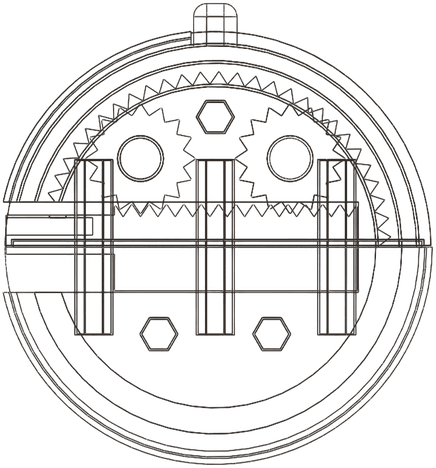
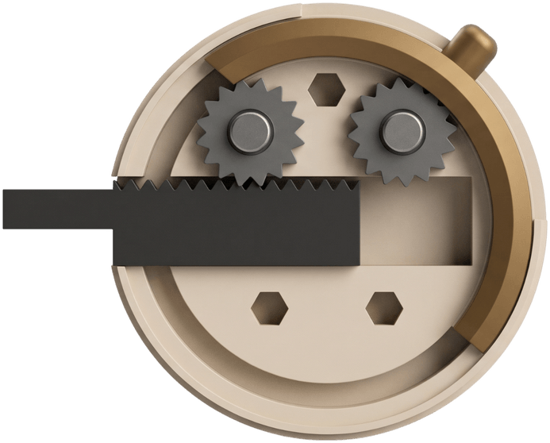
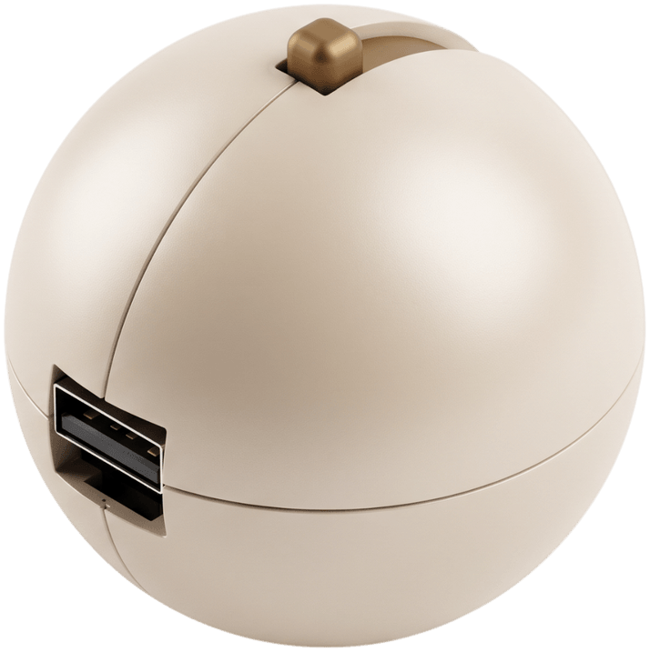
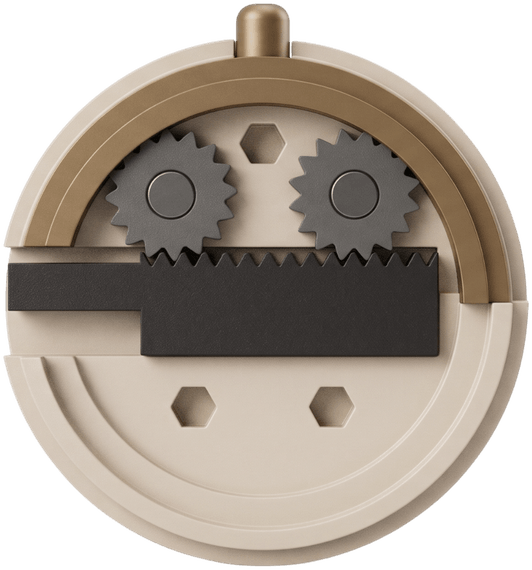

מארז כדורי לדיסק און קי
זיווד | מנגנון מכני


הרעיון
בתנועה אחת של זיז האחיזה לאורך החריץ, הדיסק און קי יוצא מהכדור.



סגור

פתוח
מבנה
מעטפת כדורית מחולקת לארבעה חלקים. בתוכה קשת משוננת עם זיז אחיזה שבולט מראש הכדור, שני גלגלי שיניים, ודיסק און קי עם שיניים לאורך חלקו העליון.
המנגנון
01
מזיזים את זיז האחיזה לאורך החריץ בראש הכדור.
02
הקשת המשוננת, שהזיז הוא חלק ממנה, מסובבת את שני גלגלי השיניים.
03
גלגלי השיניים משתלבים בשיניים שבחלקו העליון של הדיסק און קי, ודוחפים אותו החוצה מהכדור.
הרעיון
בתנועה אחת של זיז האחיזה לאורך החריץ, הדיסק און קי יוצא מהכדור.


מבנה
מעטפת כדורית מחולקת לארבעה חלקים. בתוכה קשת משוננת עם זיז אחיזה שבולט מראש הכדור, שני גלגלי שיניים, ודיסק און קי עם שיניים לאורך חלקו העליון.

המנגנון
- 01
מזיזים את זיז האחיזה לאורך החריץ בראש הכדור.
- 02
הקשת המשוננת, שהזיז הוא חלק ממנה, מסובבת את שני גלגלי השיניים.
- 03
גלגלי השיניים משתלבים בשיניים שבחלקו העליון של הדיסק און קי, ודוחפים אותו החוצה מהכדור.
